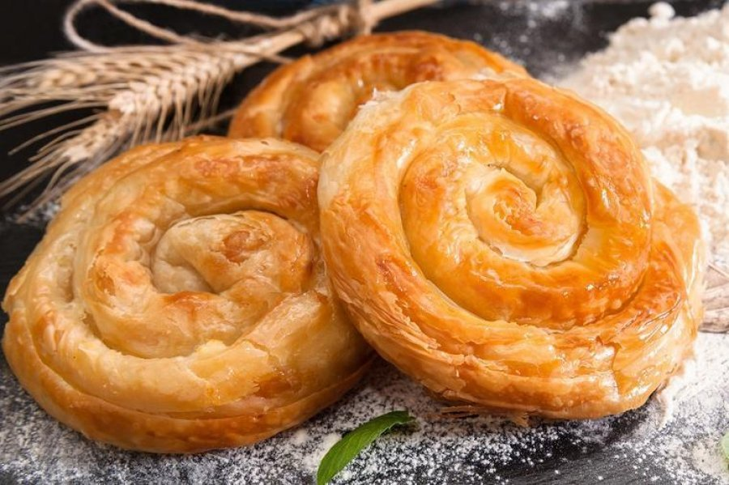

Keliaujame iš Varšuvos į Tiraną, iš oro uosto paimame nuomos automobilį ir per keturias dienas aplankome tris UNESCO istorinius miestus – Tiraną, Beratą (su Osumo kanjonu) ir Gjirokastrą – tada grįžtame į Tiraną skrydžiui atgal. Visi atkarpos keliai asfaltuoti, tinkami standartiniam nuomos automobiliui.
1 diena (spalio 30, penktadienis): atvykimas į Tiraną
🧭 Dienos maršrutas Google Maps

2 diena (spalio 31, šeštadienis): Tirana → Beratas ir Osumo kanjonas
🧭 Dienos maršrutas Google Maps


3 diena (lapkričio 1, sekmadienis): Beratas → Gjirokastra
🧭 Dienos maršrutas Google Maps

4 diena (lapkričio 2, pirmadienis): Gjirokastra → Tiranos oro uostas
🧭 Dienos maršrutas Google Maps
Žemėlapis
Biudžeto suvestinė (4 keliautojams)
| Kategorija | Min | Tikėtina | Maks |
|---|---|---|---|
| Skrydžiai (WAW↔TIA, 4 asm.) | 291 € | 530 € | 600 € |
| Automobilio nuoma (4 paros) | 170 € | 170 € | 260 € |
| Nakvynė (3 naktys, 2 kambariai) | 170 € | 260 € | 402 € |
| Maistas | 266 € | 332 € | 415 € |
| Įėjimo bilietai | 10 € | 20 € | 30 € |
| Degalai | 86 € | 104 € | 151 € |
| Viso (4 asm.) | ~993 € | ~1 416 € | ~1 858 € |
| Vienam asmeniui | ~248 € | ~354 € | ~465 € |
Skrydžiai: FR6809 Varšuva 18:30 → Tirana 20:30 (spal. 30), FR6810 Tirana 19:00 → Varšuva 21:05 (lapkr. 2), 291 € už 4 keleivius rankiniu bagažu. Užsakymo nuoroda. Kaina su registruotu bagažu gali kilti iki ~530–600 €.
Nakvynės kainos Gjirokastroje ir dalis Tiranos kainų – tik orientacinis įvertis, patikslinamas rezervuojant. Degalų suma skaičiuota pagal vidutinį kompaktinio SUV sunaudojimą (benzinas ~2,12–2,13 €/l).
Orų prognozė
Kelionės datos yra toliau nei 16 dienų į priekį, todėl žemiau rodomas tipiškas šio meto oras tose vietose – tiksli prognoza atsiras likus ~2 savaitėms iki kelionės.
Ką pasiimti
- Skysčiai rankiniame bagaže – kiekvienas buteliukas iki 100 ml, visi sudėti į vieną 1 l skaidrų maišelį.
- Peilių ir daugiafunkcių įrankių į kabiną imti negalima.
- Adapterio kištukams nereikia – Albanijoje tie patys C/F tipo lizdai ir 230V įtampa kaip Lietuvoje ir Lenkijoje.
- Temperatūra per kelionę svyruos nuo ~10°C naktį/ryte iki ~24°C dieną – rinkitės sluoksniuojamą aprangą.
- Nuomojamas automobilis turi tilpti 4 keleiviams ir jų rankiniam bagažui – su kompaktišku sąrašu tai nebus problema.
Dokumentai ir pinigai
Vairavimui
Drabužiai
Avalynė
Higiena ir vaistinėlė
Elektronika
Kita
Automobilio nuoma
Rekomenduojamos klasės
Kompaktinis SUV
Dacia Duster, Škoda Karoq, VW T-Cross
4 keleiviams su bagažu pakankamai vietos, didesnė prošvaisa tinka prastesnės kokybės ruožams, degalų sąnaudos liekant pagrindiniuose asfaltuotuose keliuose nedidelės. Geriausias balansas šiai kelionei.
38 €/parai · ~155 € visai kelionei
Vidutinis SUV
VW Tiguan, Nissan Qashqai, Hyundai Tucson
Daugiau bagažo vietos ir komforto ilgesniems pervažiavimams, patogesnis 4 suaugusiems ilgomis dienomis.
58 €/parai · ~232 € visai kelionei
Universalas / kroseris
Dacia Jogger, Škoda Octavia Combi
Pigiausias variantas su dideliu bagažinės tūriu, tinka jei maršrutas apsiriboja asfaltuotais keliais. Atsarginis, ne pirmas pasirinkimas.
30 €/parai · ~120 € visai kelionei
Nuomos įmonės
Karruka Rent a Car
Kompaktinis SUV (VW T-Cross / Dacia Duster klasė), 5 vietos
~170 € visai nuomai
Geriausiai vertinama vietinė nuomos įmonė Tiranos oro uoste – be depozito, švarūs automobiliai, greita registracija, kaina jau su SCDW/TPL draudimu.
Atsiėmimas: Tirana Airport (TIA), be depozito
CarQ
Kompaktinis/vidutinis SUV, 5 vietos
~200 € visai nuomai
Aukšti įvertinimai už kainos/kokybės santykį, draugišką personalą ir automobilių būklę; dažnai be depozito.
Atsiėmimas: ~5 min pėsčiomis nuo TIA terminalo
Sixt
Vidutinis SUV (VW Tiguan / Touareg klasė), 5 vietos
~260 € visai nuomai
Tarptautinis prekės ženklas su standartizuotu aptarnavimu ir platesniu draudimo pasirinkimu.
Atsiėmimas: Tirana Airport (TIA), stendas atvykimo salėje
- Tarptautinėms kompanijoms (pvz. Sixt) paprastai reikalingas kreditinės (ne debeto) kortelės depozitas (~300–800 €) pagrindinio vairuotojo vardu.
- Vietinės įmonės (Karruka, CarQ) dažnai nuomoja be depozito, bet verta atsispausdinti rezervaciją ir turėti vairuotojo pažymėjimą bei pasą atsiėmimo metu.
- Patikrinkite degalų politiką (dažniausiai „pilnas-į-pilną“) prieš pasirašant sutartį ir nufotografuokite automobilio būklę atsiėmimo metu.
- Kadangi automobilis atsiimamas vėlai vakare (20:30), iš anksto patvirtinkite, kad nuomos punktas dirbs tuo metu.
- Renkantis kompaktinį SUV su didesne prošvaisa, saugiau važiuoti žvyrkeliais, ypač jei lietus pablogina kelio sąlygas vėlų rudenį.
Kur pavalgyti
1 diena · Tirana
Piceri Era „Blloku“
Netoli: Viešbutis Tiranos centre, Bloko kvartalas · Vietinė taverna
~13 €/asm.
Populiarus Bloko kvartalo restoranas su tavë kosi, fërgesë ir keptomis mėsomis bei vietiniu vynu.
Byrektore Paskali
Netoli: Viešbutis Tiranos centre, Bloko kvartalas · Byrektorė
~2 €/asm.
Tikra vietinė byrekinė Bloko centre – puikus ir pigus užkandis vakare.
Juvenilja
Netoli: Viešbutis Tiranos centre · Vietinė valgykla
~8 €/asm.
Tirano gyventojų mėgstama valgykla su gausiomis porcijomis tavë kosi ir keptos mėsos.
2 diena · Beratas
Restaurant Homeri
Netoli: Berato senamiestis, Mangalemas · Šeimos taverna
~10 €/asm.
Mangalemo kvartale su vaizdu į upę ir pilies kalvą – patogi pietų vieta tiesiai maršrute.
Restaurant Mangalemi
Netoli: Berato senamiestis · Šeimos taverna
~12 €/asm.
Vienas geriausiai vertinamų Berato restoranų su terasa ir vaizdu į miestą.
Homemade Food Lili
Netoli: Berato senamiestis, Mangalemas · Šeiminė virtuvė namuose
~9 €/asm.
Patiekalus gamina šeimininko žmona savo kiemelyje pagal senas receptus.
Eni Traditional Food
Netoli: Berato senamiestis · Šeimos taverna
~9 €/asm.
Šeimos valdomas restoranas – švari aplinka ir protingos kainos.
3 diena · Gjirokastra
Kujtimi
Netoli: Gjirokastros senasis bazaras · Šeimos taverna
~10 €/asm.
Senojo bazaro taverna, žinoma dėl skanios ėrienos ant grotelių su keptomis bulvėmis.
Taverna Lani
Netoli: Gjirokastros senamiestis · Tradicinė taverna
~11 €/asm.
Senamiestyje esanti taverna, žinoma dėl lėtai troškintų tradicinių patiekalų.
Restorant Tradicional Odaja
Netoli: Gjirokastros senamiestis · Šeimos taverna
~10 €/asm.
Šeimos valdomas restoranas senamiestyje su tradicine pietų Albanijos virtuve.
4 diena · Fieris
Oliva Tradicion
Netoli: Fier – pietų pertrauka maršrute · Šeimos taverna
~10 €/asm.
Aukščiausiai vertinamas Fierio restoranas, patogus sustojimas pusiaukelėje į oro uostą.
Egnatia Restorant
Netoli: Fier – pietų pertrauka maršrute · Šeimos taverna
~9 €/asm.
Vienas geriausių tradicinio maisto restoranų Fierio centre – byrek, salotos, troškinti šonkauliai.
Vakaro barai
Bunker 1944 Bistro Lounge (1 diena, Tirana)
Baras, įrengtas tikrame šaltojo karo laikų bunkeryje, su komunistinio laikotarpio interjeru.
Sky Tower (1 diena, Tirana)
Sukimosi 360° restoranas-baras 16–18 aukšte su panoraminiu vaizdu į miestą.
Ką paragauti

Tavë kosi
Albanijos nacionalinis patiekalas – orkaitėje keptos ėrienos ir ryžių troškinys, užpiltas švelniu jogurto ir kiaušinių padažu su česnaku.
6–9 €
Kur paragauti: Restaurant Mangalemi, Homemade Food Lili, Piceri Era „Blloku“

Byrekas
Sluoksniuota tešlos pyragėlis su sūrio, spinatų ar mėsos įdaru – klasikinis pusryčių ar užkandžio patiekalas.
1–2 €
Kur paragauti: Byrektore Paskali, Eni Traditional Food

Fërgesė
Tiranos specialitetas – orkaitėje keptas varškės, keptų paprikų, pomidorų ir kiaušinio troškinys, patiekiamas puode.
4–7 €
Kur paragauti: Piceri Era „Blloku“, Juvenilja

Qifqi
Gjirokastrai būdingi apkepti ryžių ir kiaušinių kukuliukai su mėtomis – vietinis delikatesas, kurio kitur Albanijoje nerasite.
3–5 €
Kur paragauti: Kujtimi, Taverna Lani

Qofte
Keptos ar griliuje gamintos mėsos kukulaičiai su prieskoniais, patiekiami su jogurto padažu ir salotomis.
3–6 €
Kur paragauti: Juvenilja, Egnatia Restorant

Speca të mbushur (įdarytos paprikos)
Paprikos, įdarytos malta mėsa ir ryžiais, troškintos padaže – tradicinis pietų Albanijos šeimyninis patiekalas.
5–8 €
Kur paragauti: Restaurant Homeri, Restorant Tradicional Odaja
Mish në skarë me patate të fërguara
Ant žarijų keptas ėrienos ar jaučio mėsos rinkinys su smulkintomis, žolelėmis pagardintomis keptomis bulvėmis.
7–12 €
Kur paragauti: Kujtimi, Taverna Lani
Raki
Stiprus vietinis vynuogių ar slyvų spiritinis gėrimas, dažnai patiekiamas nemokamai kaip aperityvas prieš valgį.
1–3 €
Kur paragauti: Restaurant Mangalemi, Kujtimi
Praktinė informacija
- Skrydis iš Varšuvos
- FR6809, Varšuva Chopin 18:30 → Tirana 20:30 (spalio 30)
- Skrydis atgal į Varšuvą
- FR6810, Tirana ~19:00 → Varšuva Chopin ~21:05 (lapkričio 2)
- Automobilio grąžinimas
- Tiranos oro uoste, apie 15:45–16:00 – daugiau nei 3 valandos iki skrydžio, skubėti nereikės
- Kelionės vadovas / kontaktinis asmuo
- [vardas, telefono numeris]
- Nuomos automobilio įmonė
- [telefono numeris iš rezervacijos patvirtinimo]
- Viešbučiai
- [kontaktai rezervacijų patvirtinimuose]